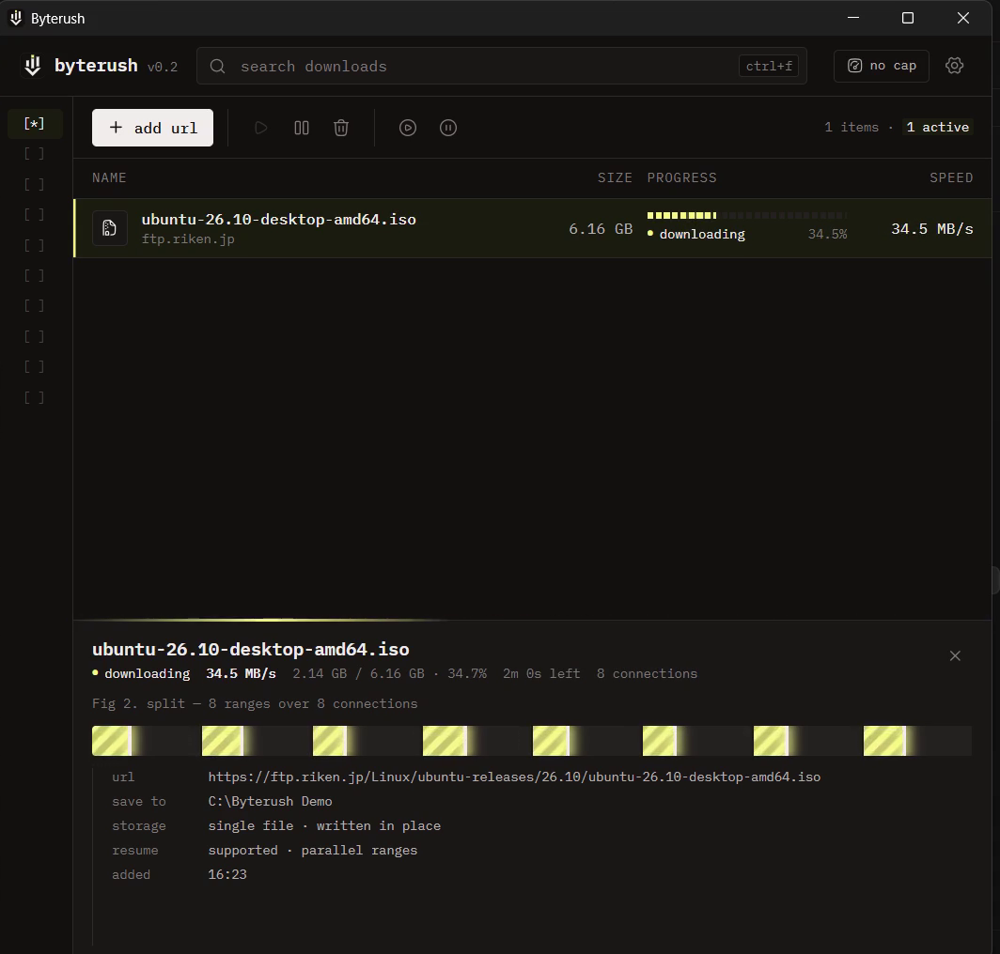
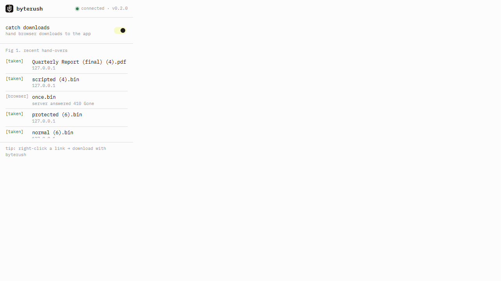

Every connection
pulls its weight.
Byterush splits a file across parallel connections and keeps them busy to the end. A focused desktop download manager for Windows, macOS, and Linux.
Free · Source on GitHub · No account required

Fig 1. a 6.6 GB Ubuntu ISO from a mirror in Japan — 8 connections, each filling its own range
What is Byterush?
A free desktop app that takes care of the whole download: from the first connection to the final file.
Connections that stay busy
Files are split into HTTP ranges: 8 connections by default, up to 32. When one finishes, it takes half of the largest remaining range.
Pause now. Resume later.
Stop and resume a download, even after restarting the app or your computer.
A queue on your terms
Limit simultaneous downloads, choose “download later,” or toggle the speed limiter when you need the bandwidth.
Files where you expect them
Automatic folders for video, music, documents, compressed files, and programs. You can also choose a separate temporary folder.
The small things, handled
Batch download numbered files with a * pattern such as img*.jpg. The clipboard monitor offers to download copied links.
Progress you can actually see
Watch each connection's speed and its range fill in real time. On drives without sparse-file support, parts are rebuilt with visible progress.
Your browser starts it.
Byterush takes it from there.
The extension catches every download Chrome or Edge starts: clicks, scripts, redirects, and server-named files. It passes the browser's session along: cookies, user-agent, and referer.
That includes clearance cookies used by sites with “verify you're human” checks. If Byterush can't get the exact same file, the browser keeps the download. Nothing is lost.
Right-click a link or media to choose “Download with Byterush.” It also works with Chrome's “ask where to save” setting, without stray dialogs.
Get the browser extension
Why it's faster (and when it isn't)
Some file hosts and mirrors limit the speed of each connection. Splitting a file into parallel ranges can get around that per-connection limit. If your internet line is already the bottleneck, speed is the same as the browser.
Fig 3. more connections help when the server limits each one
On exFAT, FAT32, and other drives without sparse-file support, each connection writes a part; Byterush rebuilds the final file afterward and shows its progress.
Built for privacy.
Everything runs locally. The extension talks to the app only on 127.0.0.1. No accounts, no telemetry, no sign-up.
Ready when you are.
Byterush is free. Choose your platform, then pick the matching build from the latest release.
github.com/zecod/byterush/releases/latestChoose the Windows build from the latest release.
Questions, answered.
Is Byterush free?
Yes. Byterush is free and its source code is on GitHub. There are no plans, tiers, accounts, or sign-up.
Which browsers work with the extension?
Chrome and other Chromium-based browsers such as Edge and Brave. For now you load it from the app's extension folder (Settings → browser → open folder) with developer mode on.
Does it work with Cloudflare-protected sites?
The extension passes along the browser's session, including clearance cookies, user-agent, and referer. That lets Byterush handle many downloads behind “verify you're human” checks. If it can't get the exact same file, the browser keeps downloading it.
Where are files saved?
You choose where downloads go. Categories can automatically place video, music, documents, compressed files, and programs into their own folders. A separate temporary folder is optional.
What if the app can't get the file?
For one-time links, bot checks, form posts, or other cases where the exact same file can't be retrieved, the browser simply keeps its download. Nothing is lost.